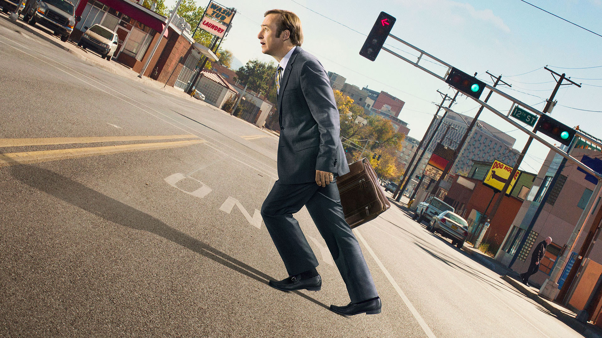

"Better Call Saul" delves into the intriguing backstory of James McGill, a struggling public defender and con artist, years before he adopts the persona of the infamous lawyer Saul Goodman. Set against the backdrop of Albuquerque, the series unfolds as Jimmy navigates a challenging legal landscape, grappling with his desire for success and acceptance. His relationship with his older brother Chuck, a respected attorney, adds emotional depth as it becomes clear that Chuck's influence plays a pivotal role in shaping Jimmy's destiny. As Jimmy strives to establish himself as a legitimate lawyer, viewers witness the complexities of his character, including moments of genuine empathy juxtaposed with a penchant for bending the rules. The series introduces us to Kim Wexler, Jimmy's love interest and fellow lawyer, whose moral compass occasionally clashes with Jimmy's evolving ethical boundaries. The narrative weaves together the personal and professional aspects of Jimmy's life, highlighting the challenges he faces in a legal system that often seems stacked against him. The show introduces familiar faces from the "Breaking Bad" universe, including Mike Ehrmantraut, whose connection with Jimmy sets the stage for the convergence of their paths. "Better Call Saul" is a masterfully crafted exploration of morality, ambition, and the gradual descent into the morally murky world that "Breaking Bad" fans came to associate with Saul Goodman. With its intricate storytelling, stellar performances, and clever callbacks to its predecessor, the series stands as a compelling and essential chapter in the broader narrative of the Breaking Bad universe.

